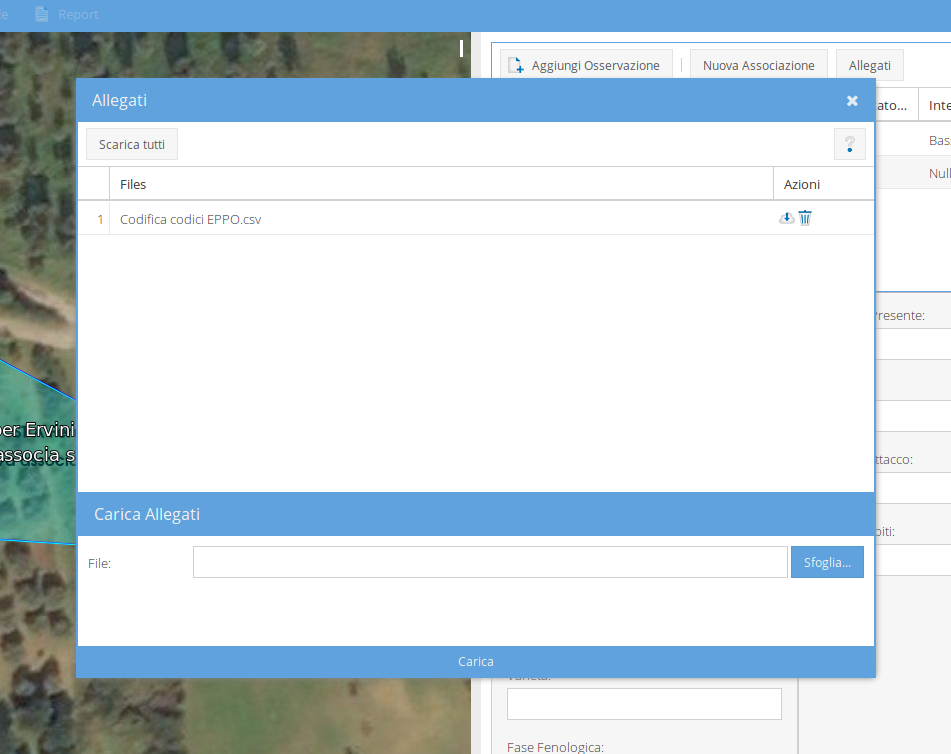

Nella tool bar delle osservazioni è possibile, attraverso il bottone Allegati, aprire la finestra degli allegati. Tale finestra presenta, nella parte superiore, la lista degli allegati; nella parte inferiore il form per caricare alletati.

La lista degli allegati riporta:
La parte bassa della finestra degli allegati è dedicata al caricamento di un allegato. Per caricare un file basta sceglierlo dal proprio dispositivo, utilizzando il tasto sfoglia e premere il bottone Carica in fondo alla finestra.
È sempre possibile visualizzare la finestra degli allegati anche nel caso in cui la scheda sia stata caricata e non più editabile. In quest'ultimo caso, però, non sarà più possibile caricarne altri.